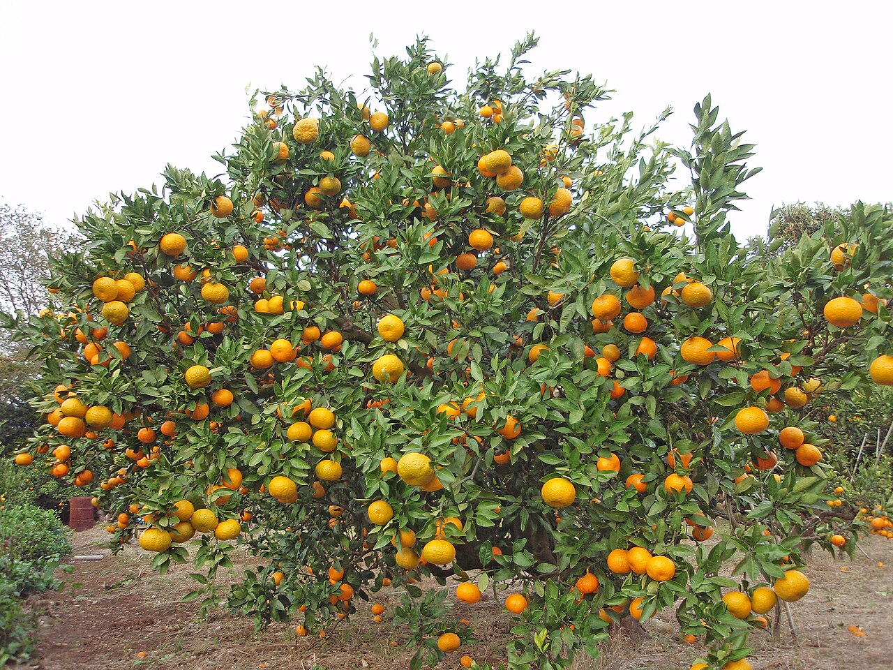
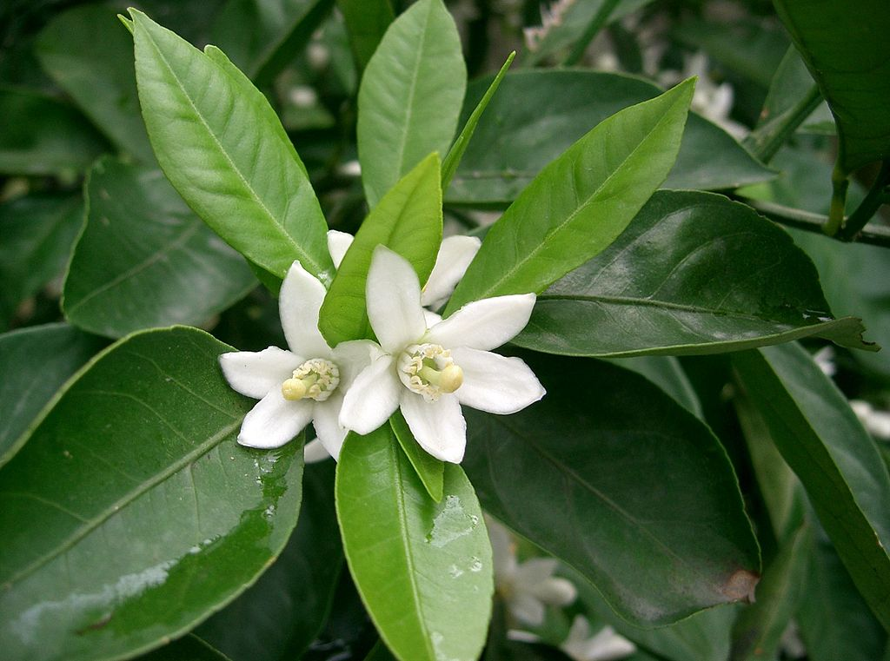
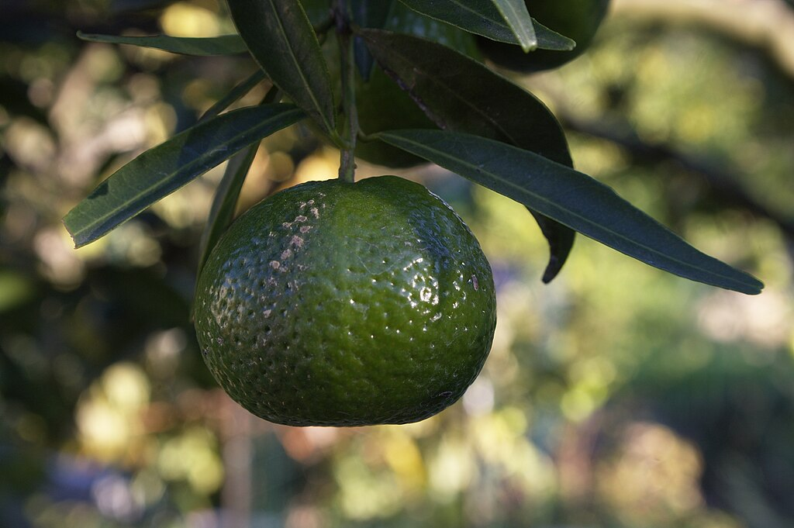
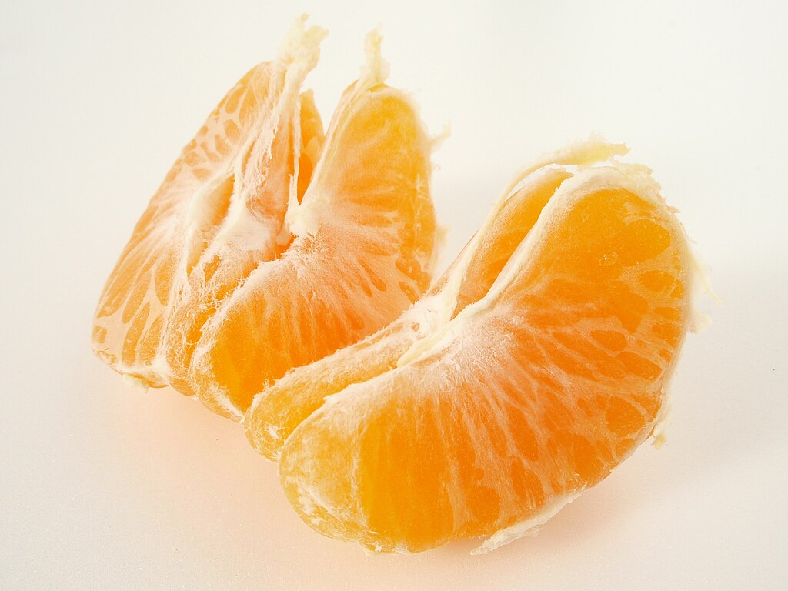
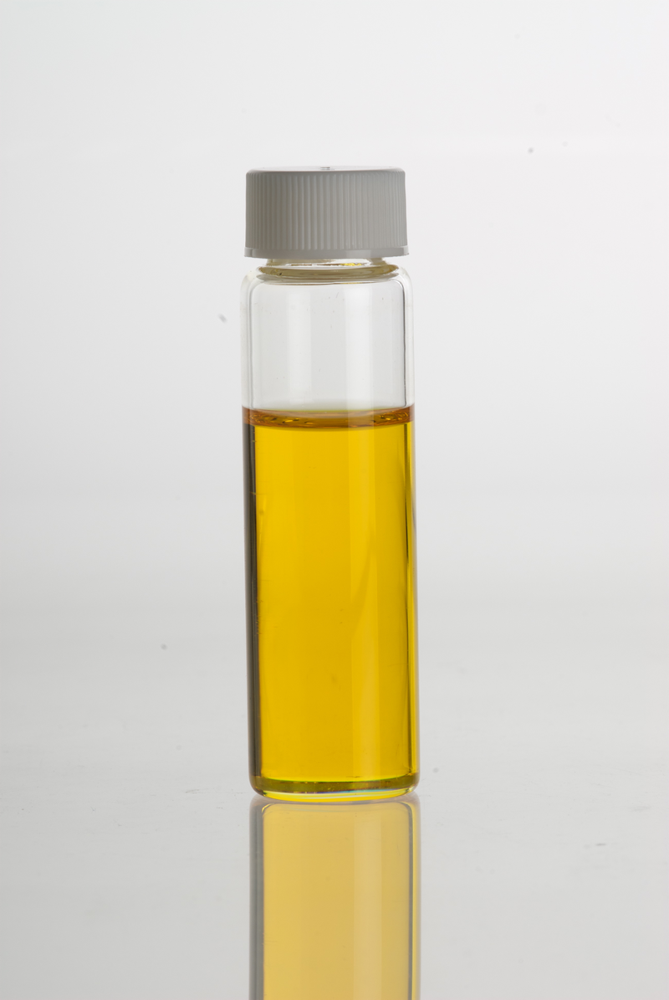

Мандарин
Мандари́н (Citrus reticulata) — багаторічна рослина родини рутових. Поширена цитрусова культура, що також використовується як лікарська, ефіроолійна та декоративна. Набула значної популярності завдяки своїм плодам, які також називають мандаринами. Втім слід зазначити, що назва цих фруктів поширюється і на плоди близьких видів і міжвидових гібридів.
Назва
Назва «мандарин» походить від французького та іспанського імен цього фрукта (mandarine, mandarin). Гіпотези походження останніх варіюються від жовтого кольору вбрання китайських державних службовців — мандаринів, до того, що мандарин є видатним видом китайського апельсина.[4]
Опис
Невеличке вічнозелене дерево з розлогою кроною, висота якого зазвичай не перевищує 2-3 м, старі особини можуть сягати 5 м заввишки. Стовбур прямий, вкритий сірою корою, молоді пагони зелені. На гілках розташовані невеликі поодинокі колючки, деякі сорти (уншіу, клеопатра) колючок не мають взагалі. Листки широколанцетні або еліптичні, звужені біля основи і верхівки, тонкі, більш-менш лискучі, зверху яскраво- або темно-зелені, зісподу дещо світліші, при розтиранні — запашні. Тривалість життя одного листка складає 2-4 роки. Черешки дуже короткі з вузьким малопомітним крилом.
Квітки поодинокі або зібрані по 2-6 штук в пазухах листків на торішніх пагонах. Чашолистки зростаються в дзвоникувату чашечку. Пелюсток 5, вони роздільні, білі. Численні (20-25 штук) тичинки зростаються у групи по кілька, вони часто мають недорозвинені пиляки. Єдина маточка довга і вузька.
Плід — померанець (гесперидій) завширшки 5-6 см. Зовні він вкритий відносно тонкою (в порівнянні з іншими цитрусами), гладкою, лискучою шкірочкою, колір якої у недозрілих плодів спочатку темно-зелений, а потім у різних сортів може набувати відтінків від жовто- до червоно-помаранчевого. Шкірка мандаринів містить величезну купу залозок, добре помітних навіть неозброєним оком (їх діаметр становить близько 0,3-0,7 мм). При пошкодженні залозок виділяється ефірна олія. Її запах у різних сортів може мінитися від сильного і витонченого до слабкого і майже не відчутного.
Внутрішній бік шкірки вкритий тонкими, м'якими, мнучкими, білими волокнами. Всередині плід розділений на соковиті гнізда (близько 10-12 штук), відділені одне від одного тонкими напівпрозорими плівками. Кожне гніздо містить дуже соковитий помаранчевий м'якуш та 1-2 насінини, але у культурних сортів плоди часто бувають безплідними. М'якуш складається з сокових мішечків — видозмінених волосків, наповнених соком помаранчевого кольору. Насінини з одного боку заокруглені, з іншого загострені, всередині — зелені.
Хімічний склад
М'якуш плодів багатий на цукри, фітонциди, вітаміни С, В1, В2, D, K, пектини, органічні кислоти, зокрема лимонну, вміст якої може сягати 0,6-1,1 %. Шкірка мандаринів містить каротин і специфічну мандаринову олію. В свою чергу ефірна олія мандарину складається з лимонену, цитралю, каприлового альдегіду і метилового ефіру атранілової кислоти, який і забезпечує її неповторний запах. В дещо меншій кількості мандаринова олія міститься і в листках.
Екологія
Мандарини досить теплолюбні рослини, тому розповсюджені лише у тропічному і субтропічному поясі. Водночас для нормального цвітіння і плодоношення ці дерева потребують дещо прохолодної зимівлі (4-10 °C). Вони полюбляють яскраве розсіяне світло, погано почувають себе як у повному затінку, так і на відкритих посушливих місцях.
Квітнуть у травні, плодоносять у жовтні-січні. У цих дерев дуже поширене самозапилення, можливе навіть зав'язування плодів без запилення. Комахи охоче відвідують квіти мандаринів, але їх роль полягає лише у перенесенні пилка з тичинок на маточку тієї ж квітки. В умовах культури мандарини найчастіше розмножують вегетативним способом (відводками, живцюванням, щепленням) і лише в кімнатному садівництві — деколи насінням. Рослини, вирощені з живців, можуть квітнути відразу ж після укорінення, в цьому випадку квіти бажано видалити для зміцнення саджанця. Мандарини, пророщені з насіння, зацвітають не раніше 10 років.
Мандаринові дерева пошкоджують червоні цитрусові кліщі, борошнисті червеці та псевдощитівки, особливо при недостатній вологості. При надлишку вологи листя вражає плямистість.
Поширення
Первинний ареал мандарина — південь Китаю, звідки він розповсюдився на прилеглі райони Південно-Східної Азії. Наразі відомі лише культурні рослини цього виду, первісні дикорослі популяції втрачені. Мандарин було завезено до Європи ще на початку ХІХ століття. Промислові плантації мандаринів зосереджені окрім Китаю в Японії, Південній Кореї, Індії, Іспанії, Алжирі, Бразилії, Туреччині, Грузії, південних регіонах Франції. Найкращі сорти мандаринів виведені в Іспанії.
Застосування
Кулінарія
Плоди мандаринів хоча і багаті на органічні кислоти, втім на смак менш кислі, ніж апельсини та, особливо, лимони. Крім того, вони позбавлені неприємної гіркоти, властивої грейпфрутам і помаранчам. Тому з давніх часів мандарини набули популярності саме як фруктовий десерт. Завдяки делікатесному смаку мандарини можна застосовувати в дієтичному і дитячому харчуванні. Вони поліпшують травлення, мають загальнозміцнюючу та протимікробну дію. Популярності цим фруктам додав і пізній строк достигання, коли більшість свіжої садовини вже недоступна. За часів СРСР мандарини були єдиним видом цитрусів, який вирощували безпосередньо в межах країни. Це зумовило їх відносну доступність на новорічні свята, через що ці фрукти набули майже культового значення.
Найчастіше їх споживають у сирому вигляді без жодної переробки. У країнах Південної та Східної Азії мандарини використовують для приготування фруктових салатів, соусів, десертів на основі рису. З них часто вичавлюють сік, рідше виготовляють варення або консервують. Шкірки мандаринів інколи використовують для приготування цукатів або безалкогольного напою, що за смаком нагадує лимонад.
Одне середнє мандаринове дерево може дати 400—600 плодів на рік, а на деяких особливо старих і великих особинах може дозріти до 5 тисяч мандаринів у сезон.
Медицина
В китайській народній медицині застосовують водний настій або відвар шкірки чи спиртову настоянку на її основі для посилення апетиту, поліпшення травлення, а також як протикашльовий і відхаркувальний засіб. В європейській медицині спиртовий екстракт мандаринової шкірки найчастіше використовують лише як супутній компонент ліків, для їх ароматизації і поліпшення смаку. Мандариновий сік при тривалому застосуванні дієвий при лікуванні грибкових захворювань нігтів.
Вживання великої кількості плодів у дітей може призвести до діатезу. Дорослим обмежити вживання мандаринів слід при виразці шлунка і дванадцятипалої кишки, гастритах з підвищеною кислотністю, гепатиті, нефриті, холециститі. Слід зважати, що деякі виробники вкривають мандарини ззовні воском і обробляють фунгіцидами для подовження терміну зберігання, тому використання шкірки з погано вимитих плодів може призвести до отруєння (м'якуш вживати безпечно в будь-якому разі).
Промисловість
У промисловому виробництві застосовується мандаринова олія. Її використовують як ароматизатор на харчових підприємствах та як компонент складних композицій у парфумерії.
Садівництво
У промисловому виробництві застосовується мандаринова олія. Її використовують як ароматизатор на харчових підприємствах та як компонент складних композицій у парфумерії.
Вирощування
Саджанці мандарина уншіу висаджують у суміш дернової, листової землі, перегною з коров'ячим гноєм та піску (2:1:1:1). Надалі молоді деревця треба пересаджувати щорічно, плодоносні — не частіше одного разу на 2-3 роки. Пересадку роблять перед початком активного росту, по закінченні цієї фази пересаджувати рослини не рекомендується. При пересадках не слід руйнувати земляну грудку. Необхідно забезпечити добрий дренаж. Коренева шийка деревця в новому горщику повинна бути на тому ж рівні, що і в старому.
Влітку і навесні поливають рясно 1-2 рази на день теплою водою, з жовтня поливання скорочують, взимку поливають помірно, 1-2 рази на тиждень і теж теплою водою. Не можна допускати пересушування земляної грудки, оскільки це призводить до скручування й опадання листя, крім того, рослина може скинути і плоди. З іншого боку, не треба забувати, що від надлишку вологи мандарини гинуть.
В першій половині літа застосовують удобрювальне поливання, яке підвищує цукристість плодів і зменшує гіркуватий присмак, властивий їм при вирощуванні в кімнатах. Мандарин тим більше потребує добрив, чим він старший і чим довше знаходиться в одній посудині. Добрива вносять після поливання. При додатковому штучному освітленні дерев взимку їх також необхідно удобрювати. Для мандаринів рекомендують органічні добрива (розведений коров'ячий гній) і комбіновані мінеральні добрива, в квіткових крамницях також продають спеціальні добрива для цитрусових.
Гібриди, різновиди, сорти
-
мандарин Сацума — досить велика група сортів японської селекції, назва яких походить від провінції Сацума, звідки їх спочатку експортували до Європи. Холодостійкі, мають солодкі плоди без насіння з особливо ніжним м'якушем;
мандарин уншіу— різними дослідниками розглядається як сорт групи Сацума, синонім мандарину Сацума, окремий підвид або, навіть, як самостійний вид (Citrus × unshiu Marcow.). За смаковими якостями схожий на мандарини Сацума, також холодостійкий;
грузинські (абхазькі) мандарини — група холодостійких сортів радянської селекції, що традиційно вирощуються в Грузії. В порівнянні з мандаринами іспанської, американської, японської селекції вони дрібніші, кисліші, але значно ароматніші, мають тонку шкірку, яка не завжди легко чиститься, в стиглому вигляді можуть бути зеленкувато-жовтими або жовто-помаранчевими;
мандарин сантра — вирізняється дуже товстою і грубою шкіркою;
мандарин кислий— підвид родом з китайської провінції Гуаньдун. Як свідчить його назва, має дуже кислі плоди;
танжерин — термін поширений переважно в англомовному середовищі. В побуті танжеринами називають солодкі мандарини червоно-помаранчевого кольору (на відміну від жовто-помаранчевих плодів, які називають просто мандаринами), але з наукової точки зору танжерином слід вважати лише гібрид Citrus × tangerina hort. ex Tanaka.;
танжело— гібрид мандарина з грейпфрутом. Має яскраво-помаранчеві плоди зі смаком, схожим одночасно на обидві батьківські форми;
тангор— гібрид мандарину з апельсином;
клементин— гібрид мандарину з одним із різновидів апельсина, названий на честь селекціонера Клемента Род'є, який його вивів. Як правило, клементини розглядаються як окремий вид, тому що в межах цієї форми виведено декілька сортів з відмінними смаковими якостями. Загалом плоди клементинів солодші за звичайні мандарини та не мають насіння;
мандарин Клеопатра— потужний гібрид, який плодоносить цілорічно. Плоди дрібні, червоно-помаранчеві, з вдавленою серединою. Шкірка тонка, але груба. М'якуш ніжний, соковитий, кислуватий;
інчарин— гібрид між ічангом і мандарином Сацума;
каламондин, або цитрофортунелагібрид мандарина з кумкватом . Маленьке деревце з дуже запашними квітами. Плоди дрібні, жовто-помаранчеві, тонкошкірі, кислі, майже не їстівні. Зазвичай каламондин розглядають як окремий вид цитрусів.
Мандаринкват, або оранжекват.